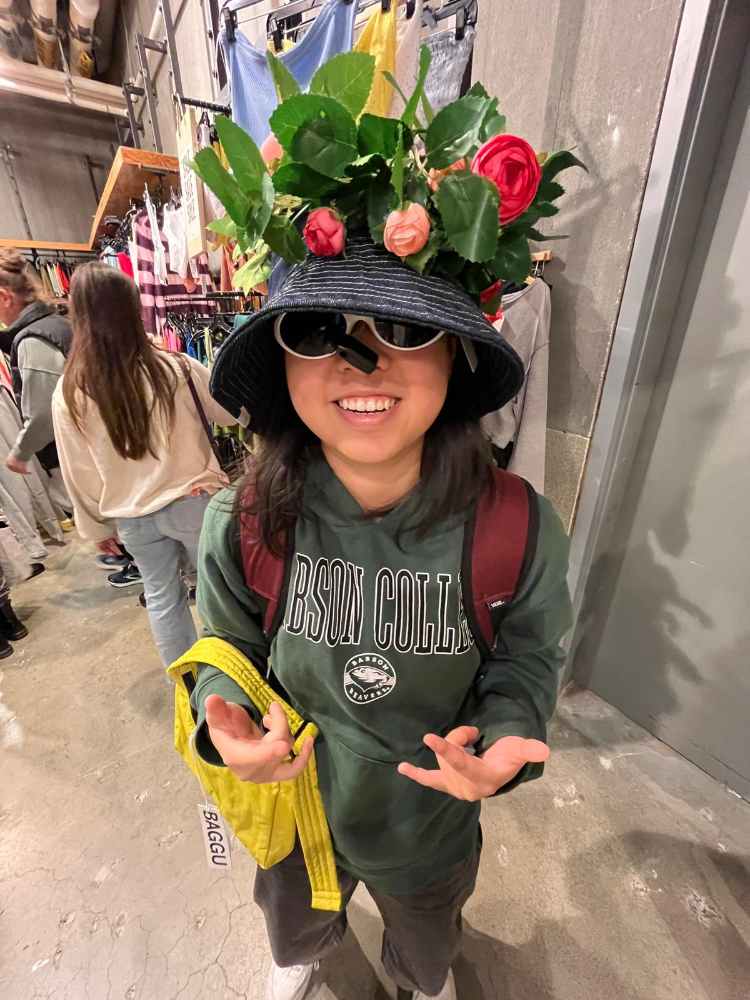

scene 01 / convenience green
i want this to feel like a color graded slide left open in a dark room.
i love when one image does the whole thing. no overexplaining. just a frame that makes you feel like maybe your life was already cinematic and you were too busy coding to notice.
slides / one image is enough
i love slides that are just one really good image.
it tells a story without trying to sound smart about it. click one and it goes back into the projector.
long take / nothing happens
maybe someday my website is just a wall.
nothing happens. newsflash, nothing is going to happen. but you can stare at it and imagine something happening in front of it, which is sometimes better.
corner-store scene study
i miss the 7-eleven downstairs.
the plastic coated coupons felt fancy for no reason. the milk cartons. the glass bottles. going into a random convenience store and learning what people within two miles are quietly enjoying.
voiceover / one person protocol
i miss paper cups with a string between them.
it was so intimate and so fun and so crafty. no feed, no audience, just one person and one line.
notes after the credits
things i keep thinking about even when i'm supposed to be doing something else.
not a resume. not trying to impress anyone. just the voiceover track because i spend most of my day coding but i care way more about how everything feels.